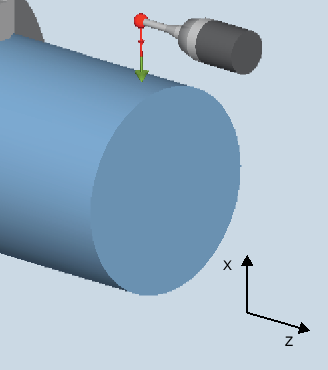
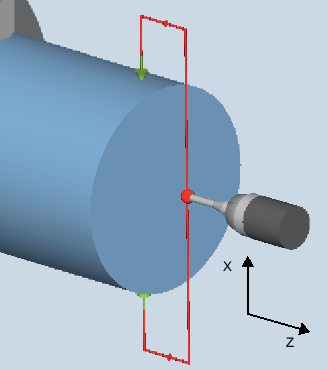

Mit dieser Messvariante können Außendurchmesser von zylindrischen Werkstücken vermessen werden. Es werden Durchmesser- und Radiusprogrammierung unterstützt.
Das Ergebnis der Messung (Messdifferenz) kann wie folgt verwendet werden:
Korrektur in die Nullpunktverschiebung (nur bei Messen ohne Umschlag, 1-Punkt-Messung)
Korrektur eines Werkzeugs
Messung ohne Korrektur
Der Messzyklus ermittelt den Istwert eines Innendurchmessers durch 1-Punkt-Messung oder 2-Punkt-Messung symmetrisch zum Werkstücknullpunkt (Drehmitte). Die 2-Punkt-Messung wird durch einen Spindelumschlag von 180 Grad des Werkstücks oder durch ein Messen ober- und unterhalb der Drehmitte durchgeführt.
|  Messen: Durchmesser außen (CYCLE974) |  Messen: Durchmesser außen (CYCLE994) |
Beim "Fahren unter Mitte" wird der Außendurchmesser des Werkstücks durch 2-Punkt-Messung mit dem Messzyklus CYCLE994 gemessen. Es werden zwei gegenüberliegende Messpunkte symmetrisch zum Werkstücknullpunkt (Drehmitte) im Abstand des vom Anwender vorgegebenen Sollwertes angefahren. Beim Verfahren wird ein Schutzbereich berücksichtigt. Der Kugelradius des Messtasters muss bei der Bemaßung des Schutzbereiches durch den Anwender berücksichtigt werden.
Positionen des Messtasters beim Messen des Außendurchmessers (CYCLE994) mit Berücksichtigung einer Schutzzone
Mit dieser Messvariante wird der Istwert eines Werkstücks in Bezug auf den Werkstücknullpunkt in der Messachse durch Erfassung zweier am Durchmesser gegenüberliegender Punkte ermittelt.
Das Werkstück wird vom Zyklus vor der ersten Messung auf die unter dem Parameter α0 programmierte Winkelstellung positioniert. Nach der 1. Messung, wird der Umschlag von 180 Grad vor der zweiten Messung ebenfalls vom Zyklus automatisch generiert. Aus beiden Messwerten wird der Mittelwert gebildet.
Eine Korrektur der Nullpunktverschiebung (NPV) ist nur beim Messen ohne Umschlag (1-Punkt-Messung) möglich.
Der Messtaster muss in Messrichtung kalibriert sein.
In der Messvariante "Unterfahren der Drehmitte" kann auch ohne vorheriges Kalibrieren gemessen werden, wenn im kanalspezifischen MD52740 $MCS_MEA_FUNCTION_MASK, Bit2 = 1 gesetzt ist.
Der Messtastertyp ist 580 und muss aktiv sein.
Die Schneidenlage kann 5 bis 8 sein und muss der Messaufgabe entsprechen.
Der Messtaster ist gegenüber der zu messenden Fläche, oberhalb der Drehmitte zu positionieren.
Der Messtaster steht im Abstand des Messweges (DFA) gegenüber der Messfläche, oberhalb der Drehmitte.
Wurde die Auswahl "Fahren unter die Drehmitte" getroffen, steht der Messtaster nach Messzyklus-Ende im Abstand des Messweges (DFA) gegenüber der Messfläche, unterhalb der Drehmitte.
Siehe auch:
Messen: Durchmesser außen (CYCLE974, CYCLE994)